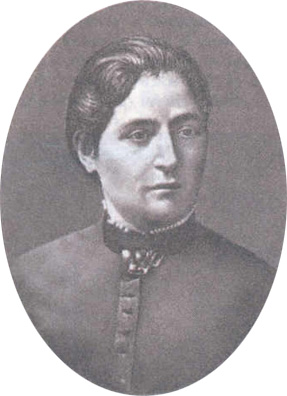

| Home
| Introduction
| Chronicle
| Texts
| Texts About
| Bibliography
| Bibliography About
Liubov Isaakovna Akselrod (Ortodoks)
(1868-1946)

Welcome to the L. I. Akselrod website. Our goal is to illustrate the life of this remarkable Marxist scholar and literary critic. As a devoted disciple of G. V. Plekhanov, Liubov Akselrod participated in many of the philosophical debates of the 1920s and 1930s. Yet her heritage remains largely unknown and unstudied.
New material is being added to the web site as it becomes available. Corrections, contributions and suggestions are welcome.